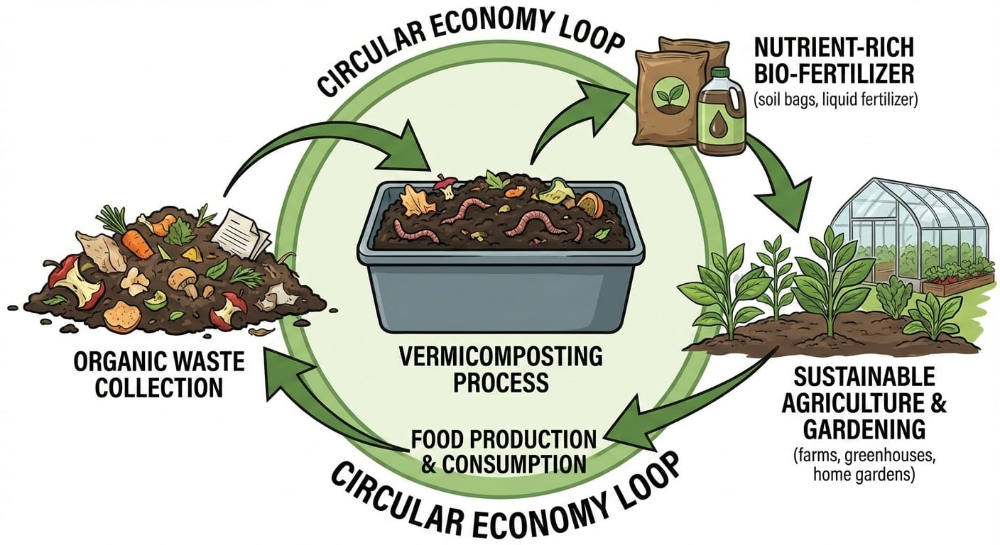
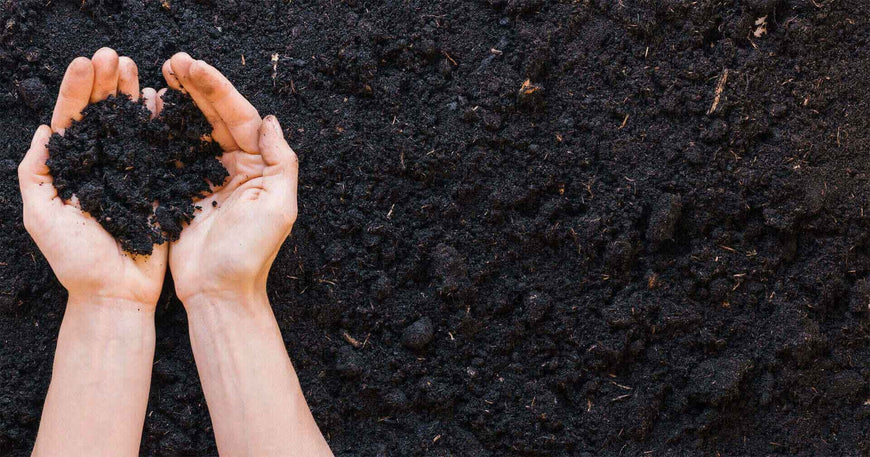
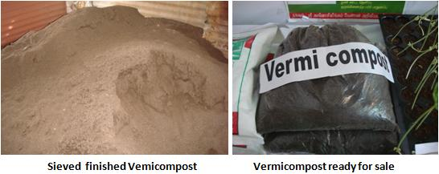
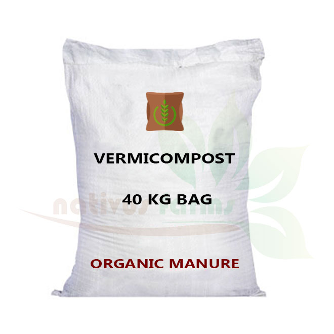

Vermicompost
Vermicompost is an organic manure created by the breakdown of agricultural waste using earthworms. It contains beneficial microbes, essential nutrients, and organic matter that improve soil structure, fertility, and crop yield naturally.

Why India for Vermicompost?
India is one of the world’s leading producers of organic inputs like vermicompost. With abundant agricultural waste and a strong ecosystem of smallholder farmers, we produce high-quality vermicompost at scale using natural processes.
Indian vermicompost is widely recognized for its nutrient richness and microbial activity, making it ideal for sustainable farming practices globally. Our strategic geographic location and strong export infrastructure ensure timely delivery to markets in the Middle East, Africa, Europe, and the Americas.
Comparison: Chemical vs Organic (Vermicompost)
| Feature | Chemical Fertilizer | Organic Vermicompost |
|---|---|---|
| Soil Health | Degrades over time | Improves soil structure & microbes |
| Nutrient Release | Fast, short-term | Slow, sustained release |
| Environmental Impact | High, pollution risk | Low, eco-friendly |
| Crop Yield | Variable | Consistent & long-term benefit |
Impact of Vermicompost on Soil & Agriculture
🌱 +35%
Soil Organic Matter Increase
📈 +20%
Crop Yield Improvement
💧 +40%
Water Retention in Soil
🪱 Enhanced
Beneficial Microbial Activity
*Figures based on typical agronomic results and may vary by crop, soil type, and farming practice.
Applications
- 🌾 Field Crops – cereals, pulses, oilseeds
- 🥬 Horticulture – vegetables, fruits, flowers
- 🌴 Plantation Crops – coconut, tea, coffee
- 🌱 Organic & Sustainable Farming
- 🏡 Home Gardening & Landscaping
Types of Vermicompost
- 100% Pure Vermicompost – without additives
- Granular Vermicompost – easy application
- Fortified Vermicompost – enriched with bio-inputs
- Customized Blends – as per buyer requirement
Quality & Nutrient Composition
Our vermicompost is processed under controlled conditions and complies with international organic standards.
Product Specifications
| Parameter | Value |
|---|---|
| Organic Carbon | 18 – 20% |
| Moisture | 25 – 30% |
| pH | 6.5 – 7.5 |
| Nitrogen | 1.5 – 2% |
Suitable Soil Types & Benefits
- ✔ Improves sandy soil water retention
- ✔ Enhances clay soil aeration
- ✔ Restores degraded & saline soils
- ✔ Increases microbial activity
- ✔ Reduces dependency on chemical fertilizers
Global Usage in Agriculture
Vermicompost is widely used in countries promoting organic and sustainable agriculture such as:
- 🇦🇪 UAE
- 🇸🇦 Saudi Arabia
- 🇪🇺 European Union
- 🇺🇸 USA
- 🇦🇫 Africa (Kenya, South Africa)
Export & Packaging Details
- Packaging: 25kg / 50kg / Jumbo Bags
- Shipping: 20ft & 40ft Containers
- Ports: Chennai / Krishnapatnam
- Documents: CO, Phytosanitary, Invoice, Packing List
Interested in Importing Vermicompost?
Email: udayamagro@gmail.com
WhatsApp: +91 9490024994
Bulk orders • Private labeling • Reliable supply
Product Gallery


